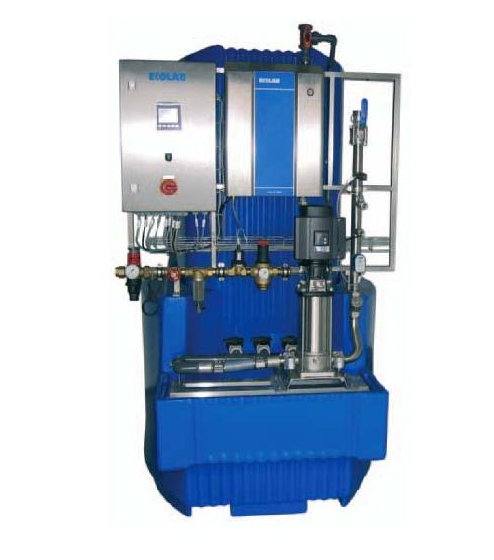
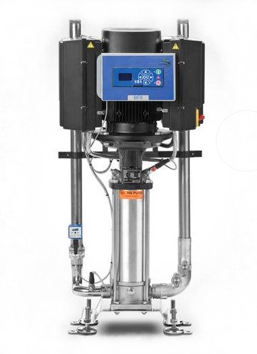
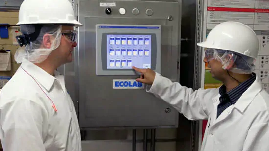
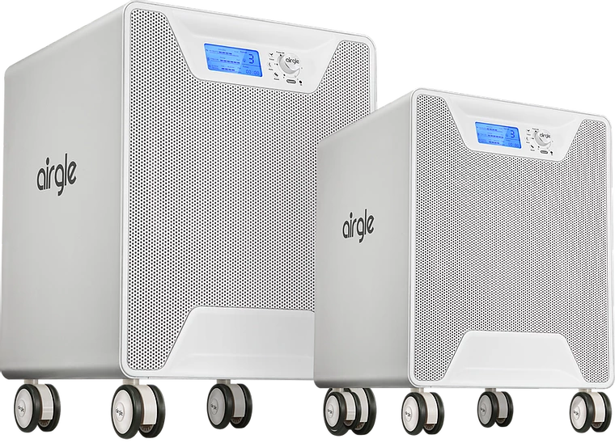
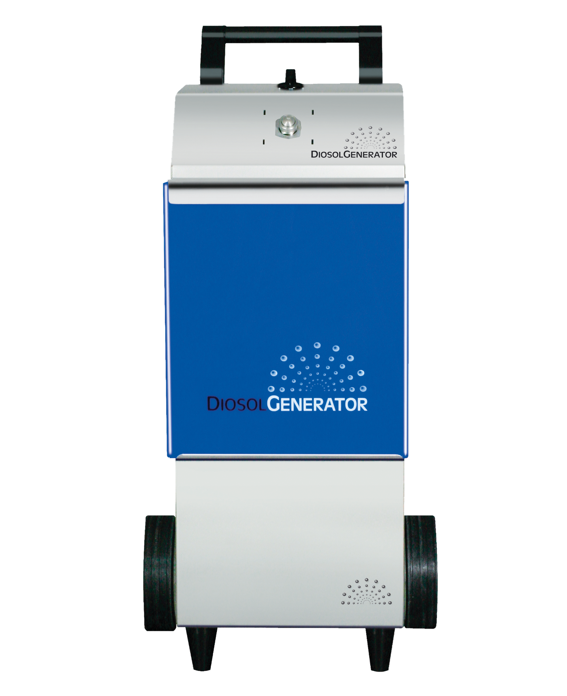

Thanks to our ecological corporate principles and certification in environmental management, we constantly strive to develop, test and improve methods for saving valuable resources. In addition to saving electricity, the consumption of water or the production of wastewater is an important issue in industrial and building cleaning. Profis Industrie Service GmbH uses various options to save water and the associated costs for our customers. In addition to small projects such as water meters and restriction nozzles, we also implement larger projects.
In the meat processing food industry in particular, the risk of cross-contamination from cutting tools is greatly increased and special guidelines for sterilizing these tools must be observed. Inspexx is a time-saving and gentle method that can even be carried out with cold water. Other advantages of this method include:


With conventional cleaning there are various steps that must be followed. It starts with pre-cleaning with water, followed by cleaning with chemicals. After the exposure time, manual cleaning and visual inspection by staff takes place. Finally, the disinfection is carried out, which also requires a certain exposure time.
To shorten this process, we use what is known as a double injector. This makes it possible to carry out the cleaning and disinfection process in one step, provided that the surface is not too dirty.
The combination of the two individual steps saves a lot of time and money.
A CIP diagnosis monitors your closed cleaning system. The individual cleaning steps are digitally analyzed remotely and the running programs such as the pre- and post-wash program is checked. The function of the valves can be checked in the same way as the dosage of the chemicals.
All collected data is saved and can be called up at any time. This gives you the assurance that the cleaning processes have been completed and that chemical residues have been completely removed for subsequent production.

The cleaning of indoor air is no longer just an issue for hospitals and other medical facilities. In industry too, it is becoming more and more important to contain microbiological contamination. The food industry in particular benefits from hygienically clean ambient air and should avoid contamination in every way.
An activated carbon filter with a titanium oxide coating effectively and quickly removes dirt from the air that is sucked in. Filtering not only removes the odor from the air, but also all pollutants such as Formaldehyde. Microorganisms that cause allergies are just as little a problem as bacteria or viruses. In combination with UV light, all chemicals are eliminated from the ambient air in the device and the air quality is increased many times over.


Our technical projects are always designed to create a visible benefit for our customers. Whether monetary or ecological, the solution should also deliver efficient results. We would be happy to inform you about further possibilities in a personal conversation. Contact us.